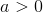

Przydatne linki
Układ okresowy pierwiastków
 Uzasadnij, że liczbę wszystkich przekątnych
Uzasadnij, że liczbę wszystkich przekątnych  kąta wypukłego można wyrazić wzorem .
kąta wypukłego można wyrazić wzorem .- Wykaż, że dla każdego , gdzie
 , zachodzi
, zachodzi  .
. - Wykaż, że dla
 i
i  , gdzie
, gdzie  .
. - Niech zdarzenia
 i
i  będą zdarzeniami losowymi zawartymi w
będą zdarzeniami losowymi zawartymi w  . Wiedząc, że i
. Wiedząc, że i  , udowodnij, że .
, udowodnij, że . - Zdarzenia losowe , są zawarte w oraz
 ( oznacza zdarzenie przeciwne do ;
( oznacza zdarzenie przeciwne do ;  oznacza zdarzenie przeciwne do ). Wykaż, że
oznacza zdarzenie przeciwne do ). Wykaż, że  .
. - , są zdarzeniami losowymi zawartymi w . Wykaż, że jeżeli i
 , to ( oznacza zdarzenie przeciwne do ).
, to ( oznacza zdarzenie przeciwne do ). - Wykaż, że jeśli zdarzenia , to
 .
. - i są zdarzeniami losowymi zawartymi w . Wykaż, że jeżeli i , to
 .
. - Zdarzenia losowe , są zawarte w . Wykaż, że jeżeli
 , to dla dowolnego
, to dla dowolnego  .
. - Wykaż, że liczba przekątnych graniastosłupa prawidłowego -kątnego wynosi
 .
. - Wykaż, że dla
 , gdzie i , zachodzi .
, gdzie i , zachodzi . - Wykaz, że dla i oraz zachodzi .
- Niech zdarzenia i będą zdarzeniami losowymi zawartymi w , a zdarzenia i są zdarzeniami przeciwnymi odpowiednio do zdarzeń i . Wiedząc, że
 i , wykaż, że .
i , wykaż, że . - Zdarzenia losowe , są zawarte w oraz ( oznacza zdarzenie przeciwne do ; oznacza zdarzenie przeciwne do ). Wykaż, że .
- Zdarzenia losowe , są zawarte w . Wykaż, że jeżeli i
 , to ( oznacza zdarzenie przeciwne do ).
, to ( oznacza zdarzenie przeciwne do ). - Dane są zdarzenia losowe , ,
 zawarte w takie, że . Udowodnij, że .
zawarte w takie, że . Udowodnij, że . - i są zdarzeniami losowymi zawartymi w , a zdarzenie jest zdarzeniem przeciwnym do . Wykaż, że jeżeli
 i
i  , to .
, to . - i są zdarzeniami losowymi zawartymi w , a zdarzenie jest zdarzeniem przeciwnym do . Wykaż, że jeżeli
 , to
, to  .
. - Wykaż, że suma kwadratów dwóch kolejnych liczb naturalnych jest liczbą nieparzystą.
- Wykaż, że suma kwadratów dwóch kolejnych liczb nieparzystych nie jest liczbą podzielną przez 4.
- Wykaż, że podana nierówność jest prawdziwa dla dowolnych liczb dodatnich
 i
i  :A)B)
:A)B) - Wykaż, że dla dowolnej nieparzystej liczby naturalnej liczba
 jest podzielna przez 8.
jest podzielna przez 8. - Uzasadnij, że liczba jest podzielna przez 42.
- Wykaż, że liczba jest naturalna.
- Uzasadnij, że liczba jest wymierna.
- Udowodnij, że jeśli , są liczbami rzeczywistymi, to .
- Wykaż, że jeśli , to .
- Wiedząc, że
 , oblicz wartość wyrażenia .
, oblicz wartość wyrażenia . - Wykaż, że prawdziwa jest nierówność.
Zadania powtórzeniowe